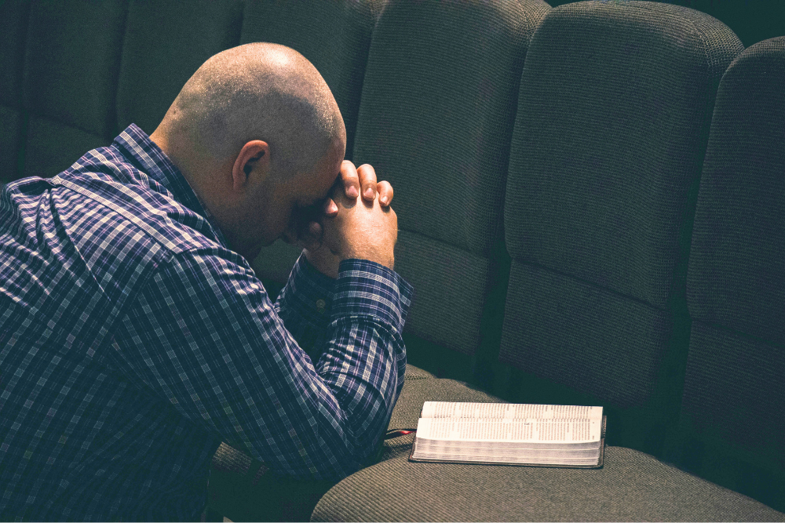

What is Prayer?
Have you ever had a moment where it felt like you have no one to talk to? Or a moment where you needed guidance, but did not know where to turn to? In these moments, the best thing we can do is to pray. Prayer allows us to communicate with our Heavenly Father who knows us perfectly well.
Read more ...How to Pray?
While there is no set rule on how prayers must be, there are important things to include in your prayer. The most important parts are addressing our Heavenly Father and ending it in the name of Jesus Christ. You can look at it as a letter being sent - where Heavenly Father is your destination and Jesus Christ is your courier. In between these, you may say whatever you feel you want to say - it could be questions, gratitutes, or even about how you are feeling.

Testimony
For me, I like to pray to God to express my gratitude. I believe that whatever that comes into my life has a purpose and is from God. By thinking about what I can be grateful for, I often notice the little things that helped me grow, made me feel joy, or gave me hope. And when I pray, I can feel that I'm not alone and that I'm loved.